Обзор
Шейдер глаз — это специализированный шейдер для рендеринга глаз. Глаза очень сложны не только по растушевке, но и по композиции, поэтому их затенение/вид невозможно добиться обычными методами растушевки.
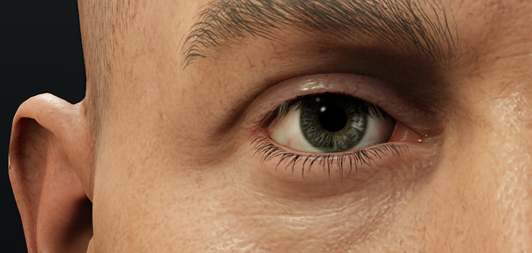
Параметры шейдера
Параметры шейдера | Описание |
|---|---|
Рефракция роговицы | С помощью этого ползунка можно контролировать размер зрачков глаз и потенциально анимировать их. |
Гладкость роговицы | Управляет блеском отражений роговицы. Значение по умолчанию 1 дает более мелкие и резкие блики, как в реальной жизни. |
Цвет Ириса | Изменяет цвет радужной оболочки глаза, не затрагивая белок глаз, потенциально может использоваться для изменения глаз разных персонажей, использующих одну и ту же текстуру. |
Ирис Глубина | Имитирует фактическую форму Радужной оболочки, поскольку внутриигровая сетка имеет форму сферы. |
Ирис Шэдоуинг | Самозатенение радужной оболочки, дополнительно имитирующее фактическую форму радужной оболочки. Обратите внимание, что на этот шейдерный эффект влияет только солнечный свет, а не другие источники света. |
Ирис SSS | SSS Ириса, размывающее тени. Чем выше значение, тем сильнее размывается затенение. |
Склера SSS | Управляет SSS белков глаз, размывая тени. Чем выше значение, тем сильнее размывается затенение. |
Шкала смещения глубины | Устанавливает смещение глубины наложенной сетки, чтобы избежать обрезки глаз. |
Сила диффузной окклюзии | Управляет силой эффекта окклюзии на глазах. |
Сила зеркальной окклюзии | Управляет силой эффекта окклюзии на зеркальных бликах глаз. |
Параметры генерации шейдеров
Параметры генерации шейдеров | Описание |
|---|---|
Карта окружающей среды | Если функция карты куба смешивания не используется, необходимо отметить этот флажок и назначить «nearest_cubemap» в слоте среды текстур. |
Наложение Ambient Occlusion | Необходимо включить сетку окклюзии, закрывающую глаз. Эта сетка придает глазам более естественное затенение и объединяет их с головой. |
Зеркальное наложение | Используется для сетки для глаз. |
Анатомия глаза
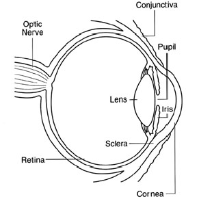
Глаз состоит из нескольких «компонентов». Наиболее актуальными в данном случае являются:
- Склера (белая область).
- Радужная оболочка (от которой зависит цвет глаз).
- Зрачок (темное пятно посередине).
- Роговица глаза («лобовое стекло» радужной оболочки).
Шейдер глаз имитирует эти компоненты, используя различные методы в одном вызове отрисовки.
Внутриигровые части глаз
Первый шаг — настроить сетки, необходимые для глаза. Для создания правдоподобного глаза используется 5 сеток.
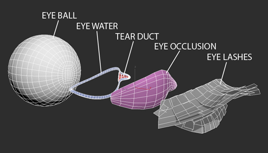
- Глазное яблоко: Довольно просто. Просто маленькая сфера/полушарие.
- Вода для глаз: Тонкая сетка, окружающая глаз и слезный проток. Обеспечивает влажность вокруг краев глаза.
- Глазной слезный проток: Довольно просто. Просто маленькая сетка, изображающая слезный проток. Использует стандартный шейдер Illum. Эта часть потенциально может быть частью фактической сетки головы.
- Окклюзионная сетка для глаз: небольшая сетка, закрывающая зазор между веками и используемая для внешней окклюзии.
- Ресницы: Простая сетка с нанесенной альфа-текстурой ресниц. См.: Шейдер для волос.
Процесс моделирования относительно прост. Сетка окклюзии глаз и топология воды в глазах должны иметь одинаковую плотность и совпадать с краевыми петлями век; это сделано для того, чтобы упростить создание скинов и сделать анимацию плавной.
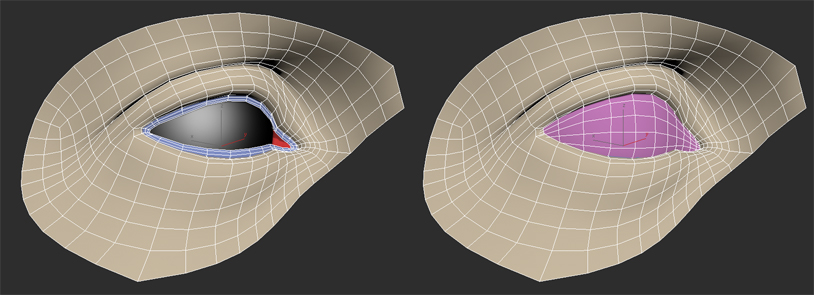
Текстуры
При настройке UV очень важно, чтобы зрачок и радужная оболочка располагались по центру пространства UV, иначе некоторые функции шейдера не будут работать должным образом. Текстуры должны соответствовать следующим рекомендациям:
Глазной шар
- Диффузная карта используется в качестве основного источника цвета.
- Альфа-карта определяет радужную оболочку и зрачок для шейдера глаз.
- Карты нормалей дают глазу необходимую нормальную информацию.
- Первая карта нормалей работает как обычная, детализируя внутренний слой глаза.
- Карта нормалей роговицы определяет форму поверхности глаза.
- Карта смещения предоставляет информацию о том, как должны деформироваться радужная оболочка и зрачок. Эта информация хранится в альфа-текстуре (стандартно для всех текстур _displ).
- Ползунок «Глубина диафрагмы» в разделе «Параметры шейдера» позволяет дополнительно настроить интенсивность смещения.
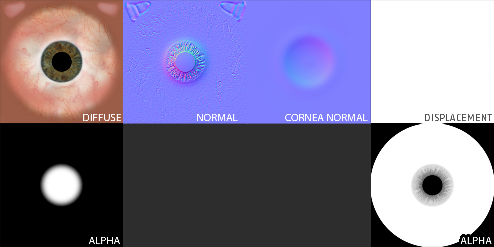
Предыдущие версии шейдера глаз имели специальную карту «Подповерхность», но в текущем шейдере глаз она устарела, поскольку эта информация о маскировании получена из канала Diffuse Alpha и управляется с помощью ползунков Iris/Sclera SSS.
Вода для глаз
- Карта бликов определяет, где должны появиться блики.
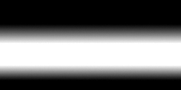
Слезный проток
- Эта сетка использует стандарт Освещенный шейдер и работает как обычные ресурсы, когда дело доходит до текстурных карт.
Окклюзия глаз
- Диффузная карта определяет, где и насколько должна появиться окклюзия.
- Позже интенсивность можно будет контролировать с помощью ползунка «Сила диффузной окклюзии» в разделе «Параметры шейдера».
- Карта бликов определяет, где и насколько сильно затенение должно появиться на бликах.
- Позже интенсивность можно будет контролировать с помощью ползунка «Сила зеркальной окклюзии» в разделе «Параметры шейдера».
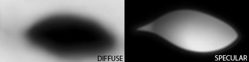
Ресницы
Эта сетка работает как обычная прическа. Видеть: Шейдер для волос.
Примеры настройки текстур шейдера
Глазной шарик
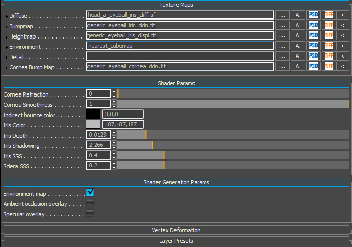
Окклюзия глаз
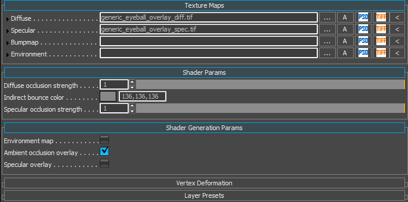
Вода для глаз
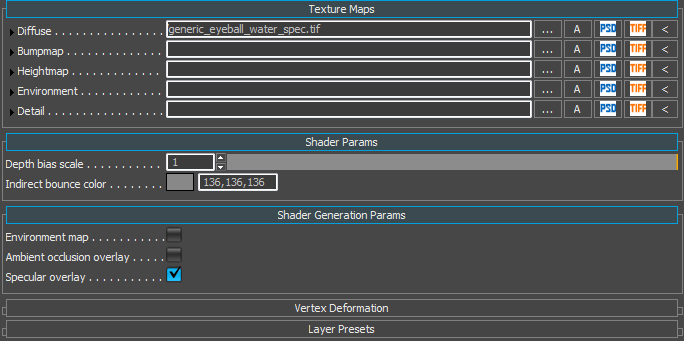
Примеры параметров шейдера
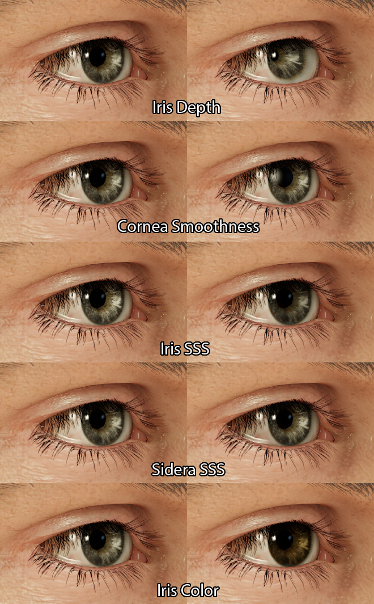